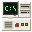
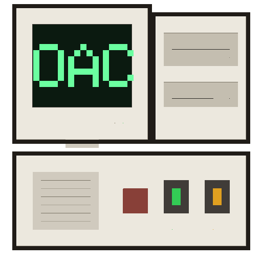

OAC Emulators ×
Welcome to OAC Emulators
Vintage machines, running entirely in your browser.
Systems
Era-correct full hardware systems you can use like the real thing.


Ready to Play
Quick to play titles you can run immediately.

Arcade
Faithful emulation of arcade cabinet hardware.
Homebrew
The author's own hardware projects.